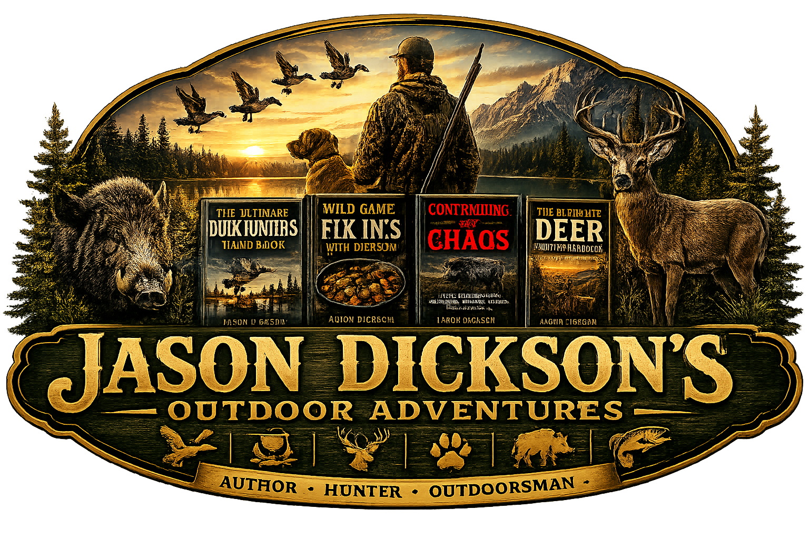
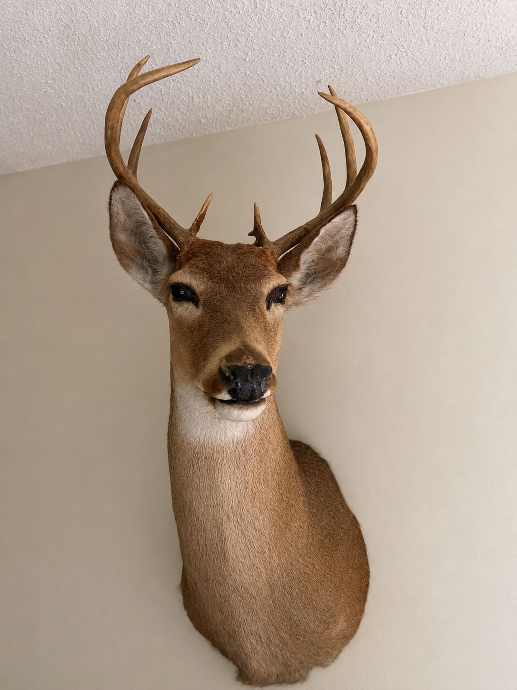
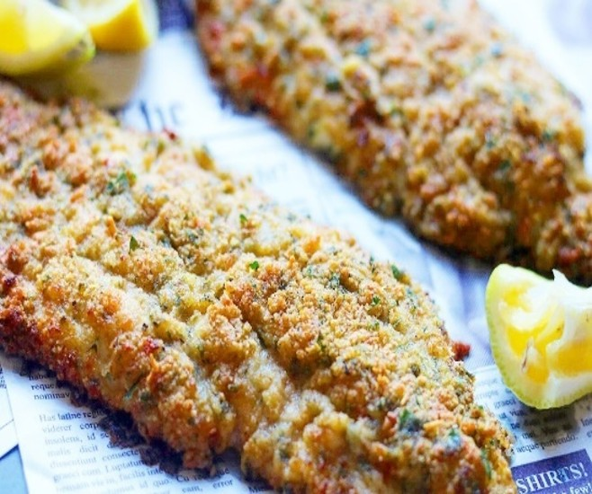

🦌 Featured Adventure
10 Deer Hunting Mistakes Every Beginner Makes
New to deer hunting? Learn ten common mistakes that can cost you opportunities in the woods and practical ways to avoid them.
Read the Article Visit the Blog
Author • Hunter • Outdoorsman
Sharing hunting adventures, wild game recipes, conservation,
and stories from the outdoors.
Welcome! I'm Jason Dickson. Whether you're chasing ducks at sunrise, tracking deer through the woods, managing feral hogs, or cooking wild game around the campfire, this site is where I share the stories, lessons, books, and experiences I've gathered over a lifetime outdoors. I'm glad you're here.

Tips, tricks, and tales for successful waterfowl hunting. A practical guide for duck hunters who want to improve their skills and enjoy every hunt.
Buy on Amazon View All BooksWaterfowl tips, gear, decoys, calling, and stories from the lake.
Recipes and cooking ideas from field to table.
Practical knowledge for hunters, landowners, and wildlife management.

New to deer hunting? Learn ten common mistakes that can cost you opportunities in the woods and practical ways to avoid them.
Read the Article Visit the Blog
Crispy on the outside, tender and flaky inside, this baked Parmesan catfish is a lighter alternative to frying and an easy family meal after a successful day on the water.
View Recipe Browse All RecipesFrom hunting adventures to fishing stories and wild game recipes, explore Jason Dickson's growing collection of outdoor books.
View the Books